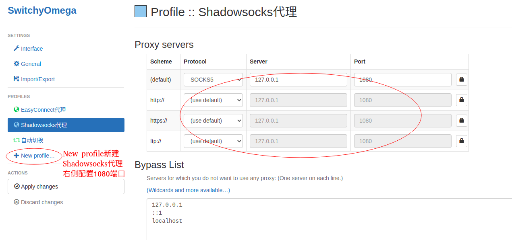
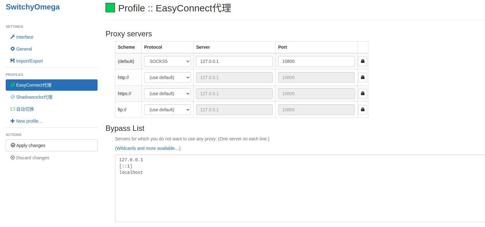
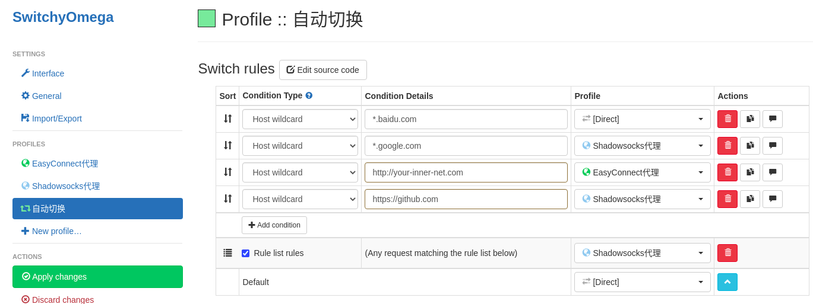

Ubuntu 20.04 使用 EasyConnect
Table of Contents
1 问题
很多公司内部都会要求使用easyconnect来做代理，但是easyconnect只支持到ubuntu 18， 现在的ubuntu 20.04 安装之后会出现各种问题。虽然后网上说替换了三个库就可以使用， 或者在登录时进度条到70%的时候执行另外一个脚本。 但是我操作的时候替换了可以到登录界面，执行了那个脚本依然不行。显示登录成功了， 但是一会又掉线了。没有办法在晚上看有没有docker版本的easyconnect，果然已经有人 开发了 (https://github.com/Hagb/docker-easyconnect)。
2 步骤
2.1 docker安装
这个是基础的就不用说了，默认可以使用docker了。
2.2 下载docker镜像
你可以使用 https://github.com/Hagb/docker-easyconnect 自己编译镜像，也可以直 接使用Hagb编译的镜像。他为了兼容各种方式，有好几种镜像。我这里就直说一种直接 通过命令行进行使用的镜像：hagb/docker-easyconnect:cli。
docker pull hagb/docker-easyconnect:cli
2.3 命令行执行
docker run --device /dev/net/tun --cap-add NET_ADMIN -ti \ -p 127.0.0.1:10800:1080 -e EC_VER=7.6.3 \ -e CLI_OPTS="-t pwd -d VPN_ADDRESS -u USERNAME -p PASSWORD" hagb/docker-easyconnect:cli
其中：
- 127.0.0.1:10800:1080 是把内部代理端口1080映射到宿主机的10800端口，这个端口 可以你自己选择。但是后续配置需要做相应改动。我们就叫10800端口是 宿主机代理 端口 ，该端口是SOCKS5协议的。
- CLI_OPTS的值是一个字符串，"-t pwd"表示使用密码登录，"-d"表示vpn的地址，"-u" 表示登录的用户名，"-p"表示登录的密码。
执行该镜像日志会显示登录成功。这时候我们的浏览器或者终端就可以通过10800这个代 理端口进行工作了。
2.4 使用配置
2.4.1 浏览器使用配置
浏览器要配置代理，我们使用的是Chrome的SwithyOmega来配置代理。我的电脑本来已 经有一个shadowsocks的代理了，他使用的是1080端口，所以上面我们配置easyconnect 的代理端口在宿主机上是10800.

Figure 1: shadowsocks代理配置
使用New Profile创建一个EasyConnect代理，右侧配置使用10800端口。

Figure 2: easyconnect代理配置
现在，通过1080端口就可以使用原来的shadowsocks代理进行网页访问了(需要 shadowsocks客户端已经启动)，通过10800端口就可以访问easyconnect代理的公司内网 服务了。那各种网址怎么选择使用哪一个代理呢？如下图，我们通过"自动切换"进去对 个网址进行配置。主要是google，github等可以配置走Shadowsocks代理，内网的服务 比如gitlab地址等，可以走EasyConnect代理。

Figure 3: shell